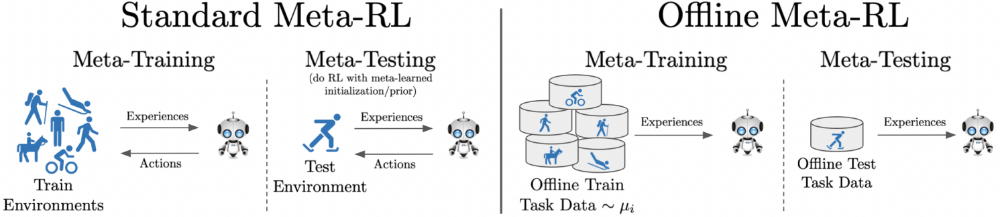

International Conference on Machine Learning (ICML 2021)
Eric Mitchell (1)Rafael Rafailov (1)Xue Bin Peng (2)Sergey Levine (2)Chelsea Finn (1)
(1) Stanford University(2) University of California, Berkeley

Abstract
This paper introduces the offline metareinforcement learning (offline meta-RL) problem
setting and proposes an algorithm that performs well in this setting. Offline meta-RL
is analogous to the widely successful supervised learning strategy of pre-training a
model on a large batch of fixed, pre-collected data (possibly from various tasks) and
fine-tuning the model to a new task with relatively little data. That is, in offline
meta-RL, we meta-train on fixed, pre-collected data from several tasks in order to adapt
to a new task with a very small amount (less than 5 trajectories) of data from the new
task. By nature of being offline, algorithms for offline meta-RL can utilize the largest
possible pool of training data available and eliminate potentially unsafe or costly data
collection during meta-training. This setting inherits the challenges of offline RL, but
it differs significantly because offline RL does not generally consider a) transfer to
new tasks or b) limited data from the test task, both of which we face in offline meta-RL.
Targeting the offline meta-RL setting, we propose Meta-Actor Critic with Advantage
Weighting (MACAW), an optimization-based meta-learning algorithm that uses simple,
supervised regression objectives for both the inner and outer loop of meta-training. On
offline variants of common meta-RL benchmarks, we empirically find that this approach
enables fully offline meta-reinforcement learning and achieves notable gains over prior
methods.
@inproceedings{
mitchell2021offline,
title = {Offline Meta-Reinforcement Learning with Advantage Weighting},
author = {Mitchell, Eric and Rafailov, Rafael and Peng, Xue Bin and Levine, Sergey and Finn, Chelsea},
booktitle = {Proceedings of the 38th International Conference on Machine Learning},
year = {2021}
}